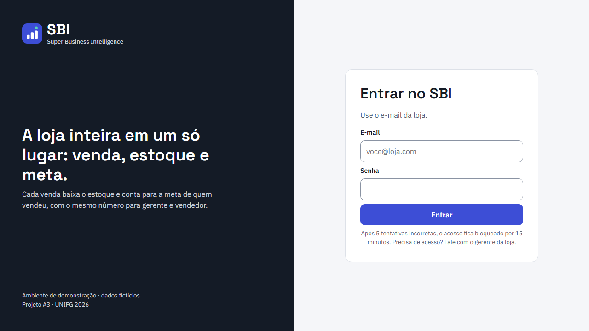
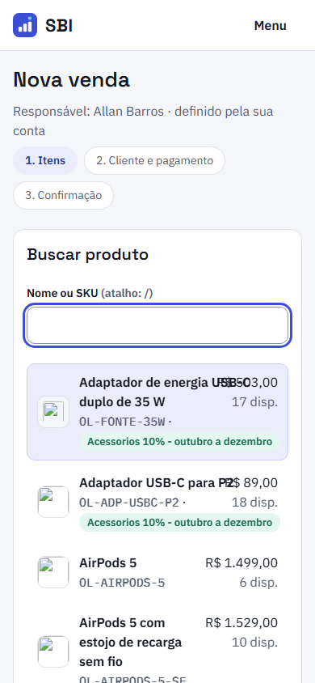
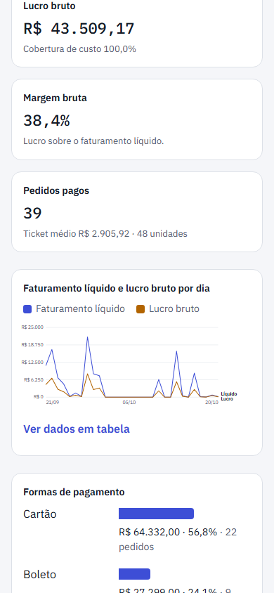
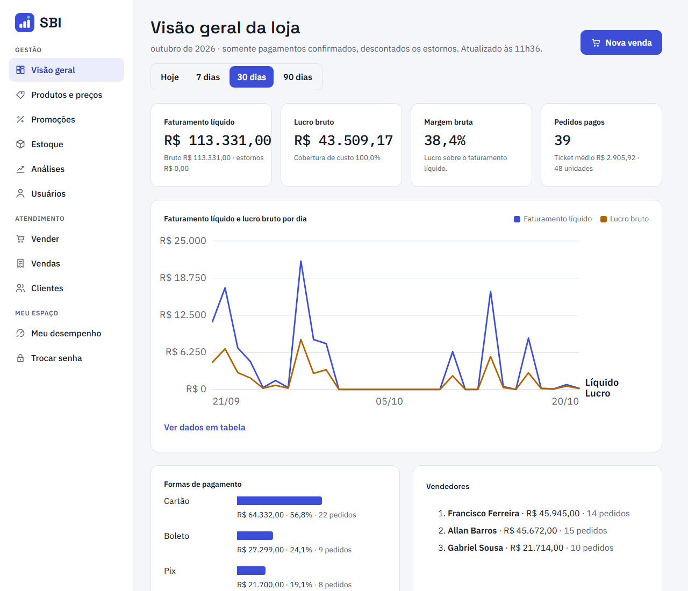
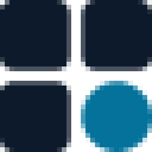
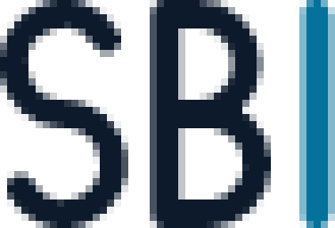
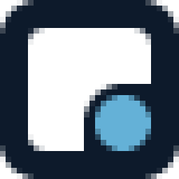

Rebranding, sistema de marca e diretrizes para a interface de gestão integrada de vendas, estoque e metas.
Centro Universitário UNIFG
Projeto Acadêmico A3 — 2026
Docentes
Docentes
| 1 | Allan Gabriel Almeida Barros | RA 1352524052 |
| 2 | Gabriel Sousa Vasconcelos | RA 13526110176 |
| 3 | Francisco Miguel de Lemos Sena Ferreira | RA 1352523939 |
| 4 | Matheus Henrique Dias Siqueira | RA 1352623492 |
| Versão | Data | Conteúdo |
|---|---|---|
| 1.0 | out. 2026 | Identidade inicial: símbolo de barras, Indigo e Menta, três famílias tipográficas; protótipo de 9 páginas. |
| 2.0 | 24 out. 2026 | Rebranding: símbolo Encaixe, Petróleo, Inter, tokens claros e escuros, regras de dados e este manual. |
| 2.1 | 25 out. 2026 | Seção 32: avatares dos usuários, expressões, movimento, regras de acessibilidade e revisão. |
| 2.2 | 3 nov. 2026 | Identidade v2 integrada e publicada; caminhos revistos. |
main pelo pull request nº 50 (9831563, 25/10/2026), com CI aprovada, e publicada na Vercel; aplicada a todas as telas da aplicaçãoorder-management-api): frontend Next.js, tokens e componentes da marca v1.0, migrações, views do banco e os avatares do PR #47.reports/marca/ (14 a 20/10/2026), com resultado do axe por tela.BARROS, Allan Gabriel Almeida; VASCONCELOS, Gabriel Sousa; FERREIRA, Francisco Miguel de Lemos Sena; SIQUEIRA, Matheus Henrique Dias. SBI — Super Business Intelligence: manual de identidade visual. Versão 2.2. [S. l.]: Centro Universitário UNIFG, 2026. Projeto Acadêmico A3.
A identidade da UNIFG aparece apenas em texto, nos materiais acadêmicos, e não integra a marca SBI.
O SBI é o sistema de gestão da loja usado como objeto de estudo do Projeto A3. Este manual redefine a sua identidade e a transforma em um sistema utilizável pelo produto.
O sistema integra o ponto de venda (busca por SKU, carrinho, pagamento por Pix, cartão ou boleto), o estoque (saldo, reservado e disponível, entradas, ajustes e mínimo), as metas mensais por vendedor, promoções e descontos com alçada, clientes, usuários e análises de margem. Cada venda reserva o estoque; a confirmação do pagamento baixa o saldo e soma ao realizado de quem vendeu.
A arquitetura publicada tem API Java (Spring), banco PostgreSQL e frontend Next.js, com acesso por papel: o gerente vê a loja; o vendedor vê a própria meta e as próprias vendas. A loja de demonstração vende um catálogo fictício de produtos Apple. Por isso o manual separa com cuidado a referência de princípios (Apple HIG) de qualquer elemento visual de marca da Apple, que não é reproduzido.
observado no código, nas capturas ou no site publicado
layout proposto com a identidade v2; não é captura do sistema
marca v1.0, em uso até esta revisão
Seis objetivos, cada um com um critério verificável.
| Objetivo | Critério de aceitação |
|---|---|
| Conceito próprio no lugar do ícone genérico de barras | Símbolo ligado à integração venda–estoque–meta, legível a 16 px e em uma cor |
| Tipografia unificada | Uma família (Inter) para toda a interface; mono só para código |
| Paleta com assinatura e estados separados | Todos os pares de texto ≥ 4,5:1 e de componentes ≥ 3:1, medidos nos dois temas |
| Tema escuro (pendência P-08 do relatório de usabilidade) | Tokens escuros completos, validados pelo mesmo teste de contraste |
| Marca como sistema | Tokens em JSON e CSS, guia de componentes e regras de visualização de dados |
| Decisões rastreáveis | Cada escolha com justificativa, referência verificável e método de teste |
Fora do escopo: alterar regras de negócio, rotas ou o banco de dados. Cores, fontes, marca, ícones e gráficos já estão no código, integrados à main; os layouts propostos ficam como referência para as próximas versões da interface.
O que existia, o que precisava mudar e em que referências e critérios a nova identidade se apoia.
A marca v1.0 é recente e tecnicamente cuidadosa, mas visualmente genérica: um ícone de gráfico de barras dentro de um quadrado.
app/icon.svg e components/brand/geometry.ts (repositório, out. 2026).Três famílias: Space Grotesk (títulos e logotipo), IBM Plex Sans (texto) e IBM Plex Mono 500 (valores, SKU e IDs).
Site publicado, tokens e componentes do repositório, 21 capturas oficiais, o PDF de protótipo e o relatório de usabilidade.
As telas internas exigem login. Elas foram avaliadas pelas capturas da equipe e pelo código, sem uso de credenciais.

reports/marca/entrar-desktop.png (15 out. 2026).

vendedor-vender-mobile.png e gerente-gestao-mobile.png (20 out. 2026), recortadas.
reports/marca/gerente-gestao.png (20 out. 2026), recortada.Doze achados, separados por natureza. A marca resolve os itens de identidade; os itens funcionais pertencem ao código.
| # | Problema | Evidência | Natureza | Decisão na v2 |
|---|---|---|---|---|
| 1 | Símbolo genérico de gráfico de barras; não comunica integração | app/icon.svg | Marca | Símbolo próprio: o Encaixe |
| 2 | Cor de detalhe sem contraste (Menta 1,8:1 sobre branco) | nota do token em brand-tokens.css | Marca | Círculo em Petróleo, 5,4:1 sobre branco |
| 3 | Três famílias tipográficas com personalidades distintas | app/layout.tsx | Marca | Inter na interface; IBM Plex Mono só em código |
| 4 | Valores em monoespaçada ocupam mais largura e lembram código | medição: +7,5% a 28 px | Interface | Inter 600 com algarismos tabulares |
| 5 | Manual v1.0 sem construção, proteção, redução mínima e usos incorretos | PDF de 9 páginas; decisão D-EVO-32 | Marca | Manual completo com regras |
| 6 | Sem tema escuro | relatório de usabilidade, P-08 | Interface | Tema escuro com tokens próprios |
| 7 | Favicon é o símbolo reduzido; sem .ico, manifesto nem ícone maskable | app/icon.svg, apple-icon.png | Digital | Conjunto completo desenhado por tamanho |
| 8 | Divisões do eixo em números não redondos (6.250) | components/charts.tsx | Dados | Divisões redondas (0, 20 mil, 40 mil…) |
| 9 | Gráfico escala junto com o SVG e os rótulos ficam ilegíveis no celular | captura móvel da Visão geral | Dados | Rótulo de 12 px fixo; gráfico redesenhado por largura |
| 10 | Botão desabilitado com opacidade de 60% | globals.css | Interface | Tokens próprios de desabilitado |
| 11 | Sobreposição de nome e preço no PDV móvel | captura do PDV | Funcional | Linha de lista com quebra controlada |
| 12 | Miniaturas quebradas na stack de demonstração | capturas de 20/10; U-24 | Funcional | Fora do escopo da marca; já corrigido |
Cinco referências de princípio. Delas vêm critérios de decisão, não formas: nenhum ícone, fonte, forma de ícone ou nome protegido da Apple é reproduzido.
Base neutra, uma cor de ação, marca restrita a entrada, barra lateral e documentos.
Nomes semânticos de tokens, escala de 4 px e dois temas validados.
Paleta categórica de 8 cores em ordem fixa, validada para daltonismo.
Estados explícitos, mensagens com causa e saída, menos ornamento.
Todos os pares medidos; estados com ícone e texto; alvos de 40 a 44 px.
O que não foi tomado como referência: gradientes, efeito de vidro aplicado a tudo, sombras profundas e ícones de gráfico sem conceito.
Benchmark de categoria: ferramentas de BI costumam usar um gráfico como logotipo. O SBI evita esse código visual para não se confundir com elas.
Datas: todas as páginas foram consultadas em 24 out. 2026; as referências completas estão na seção 40.
Seis princípios orientam cada decisão deste manual e servem de critério para revisar telas futuras.
Os princípios traduzem a referência da Apple (simplicidade, hierarquia, cor com propósito), do Carbon (sistema e consistência) e da WCAG (acesso) para a realidade de um sistema de loja, onde a confiança no número é o que importa.
Quando duas regras conflitarem, vale a ordem da lista: consistência do dado primeiro, estética por último.
Uso em revisão: cada tela nova passa pelas seis verificações antes de ser publicada. Uma resposta “não” vira tarefa no quadro do projeto, com o princípio violado no título.
O mesmo valor aparece igual em todas as telas e para todos os papéis: com centavos em indicadores, tabelas e textos; formato compacto só em eixos de gráfico.
O faturamento da Visão geral é igual ao total da tabela de vendedores, centavo por centavo.
Petróleo marca ação e identidade. Cores de dados só identificam séries. Sucesso, atenção e erro sempre vêm com ícone e texto.
Em escala de cinza, nenhuma informação da tela se perde.
A marca aparece na entrada, na barra lateral, no favicon e nos documentos. Dentro das telas, o protagonista é o dado.
O logotipo aparece no máximo uma vez por tela.
Grade de 4 px, folga constante no símbolo, números tabulares alinhados à direita e divisões de eixo redondas.
Medidas em múltiplos de 4 px; colunas numéricas alinhadas à direita.
Cada indicador diz de onde vem: “Realizado = vendas pagas menos estornos”. Dado ausente é escrito por extenso, nunca vira zero.
Todo indicador tem subtítulo com a regra ou o período.
Contraste medido nos dois temas, foco visível, alvos de toque e nenhuma informação transmitida só por cor.
Texto ≥ 4,5:1, componentes ≥ 3:1 e tarefa completa só com o teclado.
A identidade é tratada como requisito de qualidade do produto. O modelo da ISO/IEC 25010:2023 substituiu “usabilidade” por capacidade de interação e “portabilidade” por flexibilidade (ISO; IEC, 2023). O quadro relaciona as subcaracterísticas às decisões; não se alega conformidade ou certificação.
| Característica | Subcaracterística | Decisão na identidade v2 |
|---|---|---|
| Capacidade de interação | Reconhecimento de adequação | Título da tela + frase que explica o indicador |
| Apreensibilidade | Mesmos padrões em todas as telas; menu por seções | |
| Operabilidade | Alvos de 40–44 px; teclado; foco de 2 px | |
| Proteção contra erros do usuário | Confirmação para ações sem volta; botão destrutivo distinto | |
| Engajamento do usuário | Acabamento visual, hierarquia e ritmo (substitui “estética da interface”) | |
| Inclusividade | Contraste medido; informação nunca só por cor; tema escuro | |
| Assistência ao usuário | Mensagens com causa e próxima ação; tabela equivalente ao gráfico | |
| Autodescritividade | Regras visíveis (“Disponível = saldo − reservado”) | |
| Flexibilidade | Adaptabilidade | Layouts de 320 a 1536 px; tokens por tema |
| Manutenibilidade | Modificabilidade, reusabilidade | Tokens semânticos e componentes únicos |
| Heurística | Onde aparece |
|---|---|
| Visibilidade do estado do sistema | Selos de estado, “Atualizado às 11h36”, etapas do PDV |
| Consistência e padrões | Tokens e componentes únicos |
| Prevenção de erros | Confirmação antes de cancelar pedido |
| Reconhecer em vez de lembrar | Rótulos sempre visíveis; filtros no endereço |
| Design estético e minimalista | Uma cor de ação; nada decorativo |
| Recuperação de erros | O que houve + por quê + o que fazer |
A ISO 9241-210:2019 pede compreensão explícita de usuários, tarefas e ambientes, avaliação centrada no usuário e iteração (ISO, 2019). O trabalho seguiu nove fases: diagnóstico, estratégia, exploração, desenvolvimento, sistema visual, aplicações, manual, controle de qualidade e entrega. Limite: ainda não houve teste com pessoas; o roteiro do relatório de usabilidade (5 participantes, 7 tarefas) é o próximo passo.
Por que o SBI existe, para quem trabalha, como se posiciona e como fala.
Venda, estoque e meta são três leituras de um mesmo acontecimento. O SBI registra esse acontecimento uma vez e faz as três leituras concordarem.
Fazer cada decisão da loja partir de um número em que todos confiam.
O mesmo número para toda a loja.
Uma loja não tem três verdades. Uma venda acontece uma vez: tira um item da prateleira, soma na meta de quem atendeu e vira informação para quem decide. Quando cada área guarda a sua versão, a loja discute o número em vez de discutir o que fazer com ele.
O SBI registra cada venda uma única vez, calcula no servidor e mostra o mesmo resultado para o gerente e para o vendedor. Sem planilha paralela, sem valor arredondado por conveniência, sem tela que esconda de onde o dado veio.
Dados que se encaixam. Decisões que se sustentam.
O SBI — Super Business Intelligence integra vendas, estoque e metas em um único sistema. Cada venda registrada atualiza o estoque e o realizado de quem vendeu, com regras calculadas no servidor e acesso de acordo com o papel de cada pessoa.
Por que “Super”? No nome, “Super” não promete desempenho: indica a visão de cima, que reúne venda, estoque e meta em um só lugar. A comunicação evita superlativos.
Integrar vendas, estoque e metas em um único registro, para que gerente e vendedor consultem a mesma informação, no mesmo momento, e decidam com segurança.
Evoluir de projeto acadêmico para uma plataforma de gestão integrada para o varejo de pequeno e médio porte, reconhecida pela consistência dos dados e pela clareza da interface.
| Valor | O que significa | Onde aparece no SBI |
|---|---|---|
| Precisão | O valor certo, com centavos, calculado no servidor. | Dinheiro em decimal; preço histórico preservado no item. |
| Clareza | A tela explica o que mostra e de onde vem. | Fórmula visível: “Disponível = saldo − reservado”. |
| Integridade | Uma venda atualiza estoque e meta de uma vez, ou nada muda. | Reserva, saída e estorno em transação. |
| Respeito ao papel | Cada pessoa vê o que precisa para trabalhar. | Vendedor vê só a própria meta; custo só para o gerente. |
| Evidência | Decisões documentadas e testadas. | Contrato da API verificado; acessibilidade medida. |
docs/01-produto/requisitos.md e docs/06-decisoes/ (2026).O SBI registra a operação; os indicadores são consequência desse registro, não uma camada sobre outros sistemas.
O escopo documentado é a loja: venda, estoque, metas, promoções, descontos e clientes.
A comunicação descreve capacidades verificáveis. A visão é ambição, não resultado: nada de “aumente suas vendas”.
A loja de demonstração vende um catálogo fictício de produtos Apple; a identidade do SBI não usa nenhum elemento dessa marca.
Se o SBI fosse uma pessoa, seria a colega que sabe o número de cabeça e explica de onde ele veio.
O Sábio busca a verdade por meio do conhecimento; o Governante cuida da ordem e do controle. A combinação descreve um sistema que organiza a operação e diz a verdade sobre ela. O arquétipo orienta o tom; não aparece na comunicação.
Acompanha meta, estoque e exceções; precisa saber que cada alteração foi salva.
A identidade entrega: Visão geral densa, alertas acionáveis, confirmação clara
Fecha a venda no balcão, com o cliente na frente; precisa ver o total antes de cobrar.
A identidade entrega: PDV rápido, total sempre visível, nada que distraia
Banca avaliadora e colegas abrem o site publicado sem instalar nada.
A identidade entrega: Entrada que explica o produto e a espera do servidor
Perfil CEO com painel executivo em desenvolvimento no repositório; fora da versão publicada.
A identidade entrega: Mesma linguagem, maior agregação
Perfis extraídos do relatório de usabilidade (20/10/2026) e da matriz de acesso do repositório. A diretoria é citada porque existe no código em desenvolvimento, sem ser apresentada como funcionalidade publicada.
| Perfil | Dispositivo | Momento | Tarefa crítica | Implicação visual |
|---|---|---|---|---|
| Gerente | Computador | Ao longo do dia e no fechamento do mês | Acompanhar meta, estoque e exceções | Densidade, tabelas e gráficos com regra visível |
| Vendedor | Celular ou computador do balcão | Durante o atendimento | Registrar a venda e conferir o total | Alvos de 44 px, total fixo, contraste alto |
| Primeiro acesso | Computador | Avaliação do projeto | Entender o produto e entrar | Entrada que explica o sistema e a espera do servidor |
| Diretoria | Computador | Revisão periódica | Comparar resultados agregados | Mesmos tokens, menos detalhe por tela |
Para lojas que vendem no balcão e acompanham metas e estoque, o SBI é o sistema de gestão que integra venda, estoque e meta em um só registro, porque cada número é calculado uma vez, no servidor, e aparece igual para quem gerencia e para quem vende.
Uma venda registrada no balcão baixa o estoque e conta para a meta de quem vendeu, com o mesmo número para gerente e vendedor.
O SBI une a operação (vender, reservar, receber) e a leitura gerencial (meta, margem, exceções) na mesma base, com regras documentadas e testadas.
| Capacidade | Planilhas | ERP de grande porte | BI genérico | SBI |
|---|---|---|---|---|
| Venda baixa o estoque e conta para a meta no mesmo registro | Manual, em abas separadas | Sim, com módulos amplos | Não (lê dados de outros sistemas) | Sim |
| Regra de cada indicador visível na tela | Depende de quem montou | Raramente | Depende do painel | Sim |
| Acesso por papel (vendedor vê só o próprio resultado) | Não | Sim | Parcial | Sim |
| Curva de adoção para loja pequena | Baixa | Alta | Média | Baixa |
docs/01-produto/requisitos.md (RF-09 a RF-26).O SBI é o sistema da loja que registra a venda no balcão e, no mesmo instante, atualiza o estoque e a meta de quem vendeu. O gerente acompanha a loja inteira; o vendedor acompanha a própria meta. Os dois veem o mesmo número, calculado no servidor e explicado na tela.
O SBI fala como um bom gerente de loja: com o número certo, em frases curtas, sem exclamação.
| Atributo | Assim | Assim não |
|---|---|---|
| Claro Diga o que aconteceu, com o número. | “Entrada registrada. Apple Watch 41 mm agora tem 7 unidades.” | “Operação efetuada com sucesso!” |
| Direto Verbo e objeto, sem rodeio. | “Registrar entrada” | “Clique aqui para prosseguir” |
| Respeitoso Sem culpar a pessoa, sem marcar gênero. | “Acesso de Allan Barros desativado.” | “Você errou a senha!” |
| Exato Unidade, período e regra explícitos. | “Setembro de 2026 · pagamentos confirmados” | “Vendas do mês” |
| Termo | Definição exibida | Evitar |
|---|---|---|
| Faturamento confirmado | Pagamentos confirmados, descontados os estornos | Receita, vendas brutas |
| Realizado | Vendas pagas menos estornos de cada vendedor | Vendido, faturado |
| Atingimento | Realizado ÷ meta, com uma casa decimal | Performance, score |
| Disponível | Saldo − reservado | Estoque livre, saldo real |
| Reservado | Itens de pedidos aguardando pagamento | Bloqueado, empenhado |
| Ticket médio | Faturamento ÷ pedidos pagos | Média por venda |
| Estorno | Devolução do valor de um pedido pago | Reembolso, chargeback |
docs/01-produto/requisitos.md e das views do banco (2026).| Slogan | Clareza | Memória | Pertinência | Coerência | Total | Leitura |
|---|---|---|---|---|---|---|
| O mesmo número para toda a loja. | 5 | 4 | 5 | 5 | 19 | Diz a promessa central em palavras simples; fala ao gerente e ao vendedor. |
| Venda, estoque e meta em um só lugar. | 5 | 3 | 5 | 4 | 17 | Descritivo e exato; menos memorável e parecido com textos de concorrentes. |
| Dados que se encaixam. | 3 | 5 | 4 | 5 | 17 | Liga-se ao símbolo; abstrato demais para quem não conhece o produto. |
Uso: entrada no sistema, capas e apresentações. “Dados que se encaixam” fica como assinatura conceitual em materiais sobre a identidade.
Gestão de loja com vendas, estoque e metas em um só registro.
O SBI — Super Business Intelligence é um sistema de gestão para lojas que vendem no balcão. Ele integra o ponto de venda, o estoque com reserva e as metas por vendedor, calcula valores no servidor e mostra a cada pessoa o que o seu papel permite ver.
Venda no balcão com total sempre visível. Estoque com saldo, reservado e disponível. Metas mensais com realizado por vendedor. Promoções e descontos com alçada. Tudo com o mesmo número para gerente e vendedor.
Substantivo e frase curta, só a primeira letra maiúscula: “Visão geral da loja”, “Vendedores e metas”.
Verbo no infinitivo e objeto: “Criar pedido”, “Registrar ajuste”. Nunca “OK” ou “Enviar”.
Passado, o que mudou e o efeito: “Preço de Capa alterado para R$ 320,00. Vendas já feitas mantêm o preço antigo.”
O que houve, por quê e o que fazer. Sem culpa, sem código interno.
| Situação | Inadequado | Adequado |
|---|---|---|
| Erro de validação | temporaryPassword: Mínimo: 12. | Senha provisória: use pelo menos 12 caracteres. |
| Servidor indisponível | Algo deu errado do nosso lado. Tente novamente. | O sistema está iniciando ou indisponível no momento. Aguarde um minuto e tente de novo. |
| Botão de estoque | Salvar | Registrar entrada |
| Confirmação | Tem certeza? · OK | Cancelar o pedido #123? A reserva de estoque é liberada e o pedido não pode ser reaberto. · Manter pedido / Cancelar pedido |
| Lista vazia | Nenhuma venda encontrada. | Você ainda não registrou vendas. · Nova venda |
| Dado ausente | R$ 0,00 | Não informado |
Acadêmico: terceira pessoa, referência às normas e às evidências. Comercial: segunda pessoa, benefício descrito pela capacidade, nunca por resultado não medido.
Da exploração de conceitos ao símbolo final, com construção, versões, cores, tipografia e elementos de apoio.
Três direções distintas, desenhadas na mesma grade e testadas em tamanho real antes de qualquer refinamento.
Um S construído em cinco faixas de uma grade de 13 módulos. Fala de ordem e estabilidade; as faixas ligadas sugerem um fluxo contínuo.
Três módulos quadrados (venda, estoque e meta) e um círculo na quarta posição: a decisão que nasce dos três registros.

32 pxLetras S, B e I desenhadas com o mesmo traço e arcos de mesmo raio. O I em Petróleo marca a inteligência.

32 pxOs três conceitos usam as mesmas cores (Tinta e Petróleo) para que a comparação avalie forma e ideia, não cor. As miniaturas são renderizações reais em 16, 24 e 32 px, sem ajuste de pixel.
Critérios de exploração: um conceito por ideia do briefing, mesma grade de 13 módulos, nenhum gráfico de barras e nenhuma forma associada a marcas existentes.
Escala de 1 a 5, aplicada pelos autores com base nos testes em pixel, nas versões em uma cor e nas aplicações em tela. A pontuação é um apoio à decisão, não uma medição objetiva.
| Critério | A · Módulo S | B · Quadrante | C · Monograma | Final · Encaixe |
|---|---|---|---|---|
| Originalidade | 2 | 3 | 3 | 4 |
| Adequação ao produto | 2 | 5 | 3 | 5 |
| Legibilidade | 4 | 4 | 4 | 5 |
| Memorização | 3 | 3 | 3 | 4 |
| Escalabilidade | 4 | 4 | 2 | 5 |
| Aplicação em interfaces | 4 | 4 | 3 | 5 |
| Funcionamento monocromático | 5 | 4 | 5 | 5 |
| Reconhecimento em tamanho pequeno | 4 | 3 | 1 | 5 |
| Potencial de diferenciação | 2 | 3 | 2 | 5 |
| Total (máx. 45) | 30 | 33 | 26 | 43 |
A é forte como letra, mas um S geométrico é comum e não fala de integração.
B tem a melhor ideia; as quatro peças lembram ícones de aplicativos e viram ruído em 16 px.
C é legível em tamanho grande, mas o traço fino desaparece em favicon.
O bloco é o conceito B com os três módulos fundidos: venda, estoque e meta deixam de ser peças separadas e viram um só registro.
O círculo é a decisão: o número que nasce desse registro, na posição onde a leitura em Z termina.
A folga constante de um módulo, herdada da precisão do conceito A, mostra que as partes se encaixam sem sobra nem atrito.
O monograma do conceito C continua vivo: as três células do bloco recebem S, B e I na versão de selo.
Por que funciona: é uma única silhueta, sem gráfico de barras; mantém-se reconhecível em 16 px porque tem só uma folga; funciona em uma cor porque círculo e bloco se distinguem pela forma; e não se confunde com os logotipos de ferramentas de BI, que costumam usar gráficos.
Todas as medidas derivam de um módulo: o lado do símbolo dividido por 13.
| Elemento | Medida | Observação |
|---|---|---|
| Símbolo | 13 × 13 módulos | quadrado de referência |
| Células | 6 × 6 módulos | grade 2 × 2 |
| Folga | 1 módulo | constante em todo o encaixe |
| Círculo | raio de 3 módulos | tangente às bordas direita e inferior |
| Arco do encaixe | raio de 4 módulos | concêntrico ao círculo |
| Cantos externos | raio de 2 módulos | pontas dos braços em ângulo reto |
O logotipo usa a Inter Display SemiBold convertida em curvas: não depende de fonte instalada. As maiúsculas medem 9 módulos e ficam centralizadas na altura do símbolo; a distância entre símbolo e letras é de 4,5 módulos; o espaço entre letras é aberto em 1,5%. Na versão vertical, o logotipo tem a mesma largura do símbolo (13 módulos), 3,5 módulos abaixo dele.
Seis versões cobrem todos os formatos. A escolha depende do espaço disponível, nunca de preferência estética.
Uso preferencial: barra lateral, cabeçalhos, documentos.
Telas de carregamento, capas, espaços quadrados.
Avatar, ícone, barra recolhida, marca-d’água.
Selo em documentos e slides; a partir de 48 px.
Documentos formais e apresentações acadêmicas.
Desenhada na grade de pixels: células inteiras e folga de 2 px.
A marca tem duas cores e funciona com uma. O círculo muda de tom no fundo escuro para manter contraste.
| Fundo | Versão | Contraste do bloco |
|---|---|---|
| Branco | Positiva | 17.5:1 |
| Névoa | Positiva | 16.2:1 |
| Tinta | Negativa | 17.5:1 |
| Petróleo 600 | Mono branca | 5.4:1 |
O círculo positivo (Petróleo 600) tem 5.4:1 sobre branco; o negativo (Petróleo 400) tem 7.3:1 sobre Tinta. Ambos superam o mínimo de 3:1 para objetos gráficos (W3C, 2024).
Fundos fora desta lista exigem a versão monocromática e teste de contraste de pelo menos 3:1.
Fundo branco ou Névoa. Versão principal.
Fundo da aplicação (#F4F6F9).
Fundo Tinta ou tema escuro; círculo em Petróleo 400.
Sobre Petróleo, fotos escurecidas e cores sólidas.
Impressão em uma cor, carimbos, documentos em preto.
Impressão sem cor: bloco 90% e círculo 55% de preto.
Nenhum texto, borda ou imagem entra na área de proteção. Abaixo do tamanho mínimo, use a versão reduzida.
Na versão vertical e no símbolo isolado, a margem também é o raio do arco do encaixe. Em ícones de aplicativo, vale a zona segura da plataforma (seção 25).
| Versão | Digital | Impresso |
|---|---|---|
| Logotipo horizontal | 72 px de largura | 25 mm de largura |
| Logotipo vertical | 48 px de largura | 16 mm de largura |
| Assinatura institucional | 160 px de largura | 45 mm de largura |
| Símbolo | 16 px (versão de pixel) | 6 mm |
| Monograma | 48 px | 12 mm |
A 72 px as letras medem cerca de 18 px de altura e a folga continua visível.
A área de proteção vale 4 módulos, o raio do arco do encaixe, em todos os lados. Em interfaces, conta como distância mínima até outros elementos, não como margem obrigatória do contêiner.
Use sempre os arquivos da pasta 03-marca. Não redesenhe, não digite o logotipo em uma fonte e não monte versões a partir de capturas de tela.
Base neutra, uma cor de assinatura e cores funcionais separadas. O Petróleo nasce da síntese do azul executivo com o teal tecnológico da hipótese inicial.
Os 4% restantes são cores de estado e de dados, que só aparecem quando carregam informação.
Hipótese testada: o azul #2563EB e o teal #0F766E sugeridos no briefing são cores padrão de bibliotecas populares e criariam duas cores de destaque concorrentes. O teal foi para a paleta de dados; o azul deu lugar ao Petróleo.
* CMYK por conversão matemática, sem perfil. Para impressão, converter com o perfil ICC da gráfica (por exemplo, FOGRA39) e aprovar prova de cor.
| Degrau | Tema claro | Tema escuro |
|---|---|---|
| 50 | bg-selected, info-bg | — |
| 100 | trilha do medidor | — |
| 200 | — | text-link-hover, text-selected |
| 300 | info-border | text-link, info-text |
| 400 | — | focus-ring, brand-dot |
| 600 | text-link, action-primary, focus-ring, brand-dot | action-primary |
| 700 | text-link-hover, action-primary-hover, info-text | action-primary-pressed |
| 800 | text-selected, action-primary-pressed | — |
| 900 | — | trilha do medidor |
tokens.json e components.css (2026).| Degrau | Tema claro | Tema escuro |
|---|---|---|
| 0 | bg-surface, text-inverse, action-on-primary | action-on-primary, brand-block |
| 25 | bg-subtle | — |
| 50 | bg-canvas | bg-inverse |
| 100 | bg-hover, action-secondary-hover, action-disabled-bg | — |
| 200 | bg-pressed, border-subtle, chart-grid | — |
| 300 | border-default, chart-axis | — |
| 400 | text-disabled, action-disabled-text, chart-compare | — |
| 500 | border-control | — |
| 600 | text-tertiary, icon-default, chart-label | — |
| 700 | border-strong, text-secondary | — |
| 950 | bg-inverse, text-primary, icon-strong, brand-block, chart-goal | text-inverse |
tokens.json (2026); rampas em OKLCH com matiz fixo (232° e 255°).Todos os 78 pares semânticos foram medidos com a fórmula de luminância relativa da WCAG 2.2: 78 de 78 atendem ao mínimo nos dois temas. A tabela mostra uma amostra; a lista completa está em 05-design-system/contraste.csv.
| Par | Critério WCAG | Mínimo | Claro | Escuro |
|---|---|---|---|---|
| Texto principal sobre superfície | 1.4.3 | 4.5:1 | 17.50 | 16.21 |
| Texto secundário sobre superfície | 1.4.3 | 4.5:1 | 8.30 | 10.81 |
| Texto terciário sobre superfície | 1.4.3 | 4.5:1 | 5.60 | 7.36 |
| Texto terciário sobre hover | 1.4.3 | 4.5:1 | 4.86 | 6.12 |
| Link sobre fundo | 1.4.3 | 4.5:1 | 4.99 | 11.40 |
| Contorno de campo sobre superfície | 1.4.11 | 3.0:1 | 3.70 | 4.18 |
| Anel de foco sobre superfície | 1.4.11 / 2.4.7 | 3.0:1 | 5.40 | 7.50 |
| Texto sobre botão primário | 1.4.3 | 4.5:1 | 5.40 | 5.40 |
| Texto sobre botão primário (hover) | 1.4.3 | 4.5:1 | 7.42 | 4.84 |
| Botão primário sobre superfície | 1.4.11 | 3.0:1 | 5.40 | 3.31 |
| Texto selecionado sobre fundo selecionado | 1.4.3 | 4.5:1 | 9.39 | 10.06 |
| Atenção: texto sobre fundo | 1.4.3 | 4.5:1 | 5.72 | 9.44 |
| Erro: texto sobre fundo | 1.4.3 | 4.5:1 | 6.01 | 7.86 |
| Texto branco sobre erro sólido | 1.4.3 | 4.5:1 | 5.57 | 5.57 |
| Rótulo de eixo sobre superfície | 1.4.3 | 4.5:1 | 5.60 | 7.36 |
| Ponto da marca sobre superfície | 1.4.11 | 3.0:1 | 5.40 | 7.50 |
Na deuteranopia, sucesso e atenção ficam próximos: por isso estado sempre leva ícone e texto (W3C, 2024, critério 1.4.1).
Uma família para tudo. A Inter tem versão de texto e de display, algarismos tabulares e desambiguação de caracteres.
A Inter é distribuída sob a SIL Open Font License 1.1 e documenta os recursos tnum (algarismos tabulares), case, zero e ss02 (desambiguação) usados neste sistema (Andersson, 2024). A IBM Plex Mono segue a mesma licença (IBM, 2025).
| Estilo | Família | Peso | Desktop (px) | Celular (px) | Espaço entre letras | Uso |
|---|---|---|---|---|---|---|
display | Inter Display | 600 | 40/48 | 32/40 | -0,022 em | Números e títulos de capa; no máximo um por tela. |
heading-1 | Inter Display | 600 | 30/38 | 26/34 | -0,020 em | Título da tela (um por tela). |
heading-2 | Inter Display | 600 | 22/30 | 20/28 | -0,015 em | Título de seção ou de cartão principal. |
heading-3 | Inter | 600 | 17/24 | — | -0,010 em | Título de cartão, painel e diálogo. |
body-lg | Inter | 400 | 16/24 | — | -0,011 em | Texto de leitura: login, ajuda, onboarding. |
body | Inter | 400 | 15/22 | 16/24 | -0,009 em | Texto padrão da interface. |
body-strong | Inter | 600 | 15/22 | — | -0,009 em | Ênfase em linha, nomes, valores em texto. |
label | Inter | 500 | 14/20 | — | -0,006 em | Rótulos de campo, itens de menu, abas. |
caption | Inter | 400 | 13/18 | — | -0,003 em | Notas, legendas, ajuda de campo. Menor corpo para texto corrido. |
overline | Inter | 600 | 12/16 | — | +0,060 em | Rótulo de grupo em maiúsculas (menu, seções). Nada abaixo de 12 px. |
kpi | Inter Display | 600 | 28/34 | 24/30 | -0,020 em | Valor de indicador (algarismos tabulares). |
kpi-sm | Inter | 600 | 20/26 | — | -0,015 em | Valor secundário em cartão ou resumo. |
table | Inter | 400 | 14/20 | — | -0,006 em | Células de tabela (números tabulares e alinhados à direita). |
table-head | Inter | 600 | 12/16 | — | +0,020 em | Cabeçalho de tabela. |
button | Inter | 600 | 15/20 | — | -0,009 em | Texto de botão. |
code | IBM Plex Mono | 400 | 13/20 | — | 0 em | Código e dados técnicos (IBM Plex Mono). |
Tablet usa os valores de desktop. Campos de formulário têm 16 px no celular para evitar zoom automático. Nenhum texto fica abaixo de 12 px; texto corrido, abaixo de 13 px.
Números são o conteúdo principal do SBI. As regras abaixo garantem leitura rápida e o mesmo valor em todas as telas.
tnum), alinhado à direitaSempre com centavos e símbolo: R$ 186.400,00. No cartão, “R$” em 64% do corpo e cor de apoio. Formato compacto (“R$ 186,4 mil”) só em eixos.
Uma casa decimal, vírgula e sem espaço: 77,7%. Atingimento = realizado ÷ meta × 100.
Sinal explícito e seta: ▲ +4,2% · ▼ −3,1%. A cor nunca é o único sinal; use o sinal de menos (−), não o hífen.
“Não informado” por extenso; meta zero vira “Sem meta”. Nunca R$ 0,00 inventado.
Inter 500 com ss02: 0 cortado e I, l e 1 distintos: OL-AIRPODS-MAX2 · #1094.
Tabulares em tabelas, eixos e indicadores que se atualizam (o painel recarrega a cada 15 s); proporcionais em números estáticos de capa.
A tabela usa 14 px com algarismos tabulares e alinha números à direita; rótulos de coluna numérica também ficam à direita, para que título e valor se alinhem.
| Dado | Formato | Onde |
|---|---|---|
| Data | 24/10/2026 | Tabelas, campos e filtros |
| Data em texto | 24 out. 2026 | Frases, rodapés e documentos |
| Mês de referência | setembro de 2026 · set. 2026 | Título da tela · eixo de gráfico |
| Hora | 11h36 | “Atualizado às 11h36” |
| Intervalo | 1–6 set. | Semanas no eixo; meia-risca sem espaços |
| Quantidade | 7 unidades · 7 | Frase · célula com a unidade no cabeçalho |
| Eixo compacto | 20 mil · 1,2 mi | Só em eixos; nunca em cartões ou tabelas |
Poucos elementos, todos derivados do símbolo ou da grade. Nada é decorativo por si só.
icons-data.ts); os demais seguem a mesma construção (2026).Pontas e junções arredondadas, cor do texto ao lado (currentColor), 20 px na interface e 24 px em destaque. Ícone decorativo fica oculto para leitores de tela; ícone sozinho recebe nome acessível.
Ícones em tamanho real. No celular, o alvo de toque tem pelo menos 44 × 44 px, mesmo com ícone de 20 px.
Recorte: o símbolo ampliado e cortado pela borda, a 6–14% de opacidade, em capas e slides.
Linha de encaixe: o arco e o círculo como separador em capas e aberturas.
Malha de símbolos: repetição em baixa opacidade para fundos de crachás e materiais impressos; nunca atrás de texto pequeno.
Imagens: o SBI se apresenta por telas reais e dados de demonstração identificados. Não usar fotos de banco de imagens, ilustrações genéricas de gráficos, degradês ou efeitos de vidro.
A marca convertida em ativos, tokens, componentes e regras para o produto e para os dados.
Cada tamanho foi desenhado na grade de pixels. O favicon não é o logotipo reduzido: tem células inteiras e folga de 2 px.

32 px04-favicon-e-icones (2026).| Arquivo | Tamanho | Uso |
|---|---|---|
favicon.ico | 16, 32, 48 | Navegadores sem SVG; placa Tinta, versões de pixel |
icon.svg | vetor | Aba do navegador; bloco muda para branco no modo escuro |
apple-touch-icon.png | 180 × 180 | Atalho no iOS; quadrado opaco (o sistema arredonda) |
icon-192.png · icon-512.png | 192, 512 | Manifesto (PWA), propósito “any” |
icon-maskable-512.png | 512 × 512 | PWA “maskable”; símbolo dentro da zona segura |
manifest.webmanifest | — | Nome, cores e lista de ícones |
/entrar, identidade v2./gestao, identidade v2.// app/ (Next.js 16) — arquivos de metadados app/favicon.ico // 16, 32 e 48 px app/icon.svg // adaptativo claro/escuro app/apple-icon.png // 180 × 180 app/manifest.ts // gera /manifest.webmanifest export const viewport = { themeColor: [ { media: '(prefers-color-scheme: light)', color: '#F4F6F9' }, { media: '(prefers-color-scheme: dark)', color: '#090F16' } ] };
<link rel="icon" href="/favicon.ico" sizes="32x32"> <link rel="icon" href="/icon.svg" type="image/svg+xml"> <link rel="apple-touch-icon" href="/apple-touch-icon.png"> <link rel="manifest" href="/manifest.webmanifest">
O Next.js aceita app/favicon.ico, app/icon.svg, app/apple-icon.png e app/manifest.ts como arquivos de metadados e gera as tags automaticamente (Vercel, 2026a, 2026b). O icon.svg atual do repositório deve ser substituído pelo da pasta 04-favicon-e-icones.
Em slides e documentos, use o símbolo isolado ou a placa de 512 px; nunca o favicon ampliado.
Uma fonte única de valores. O código nunca usa hexadecimal solto: usa o nome do papel que a cor cumpre.
Valores brutos, sem significado.
--sbi-petroleo-600: #04729BFunção na interface; mudam por tema.
--sbi-action-primaryClasses que só usam semânticos.
.sbi-btn--primarytokens.json — formato DTCG ($value, $type)tokens.css — variáveis CSS, claro e escurocomponents.css — componentesfonts.css — Inter e Plex Mono--sbi- + categoria + papel + variação: --sbi-text-secondary, --sbi-action-primary-hover, --sbi-space-4 (4 × 4 = 16 px).
/* uso em um componente */ .kpi-value { font: var(--sbi-type-kpi); letter-spacing: var(--sbi-tracking-kpi); font-variant-numeric: tabular-nums; color: var(--sbi-text-primary); } /* tema escuro: <html data-theme="dark"> */
| Token | Claro | Escuro |
|---|---|---|
--sbi-bg-canvas | #F4F6F9 | #090F16 |
--sbi-bg-surface | #FFFFFF | #101821 |
--sbi-text-primary | #0D1A2B | #F2F4F6 |
--sbi-text-secondary | #444F5F | #C3CAD2 |
--sbi-text-tertiary | #5D6977 | #9FA7B2 |
--sbi-border-control | #7B8693 | #727B88 |
--sbi-action-primary | #04729B | #04729B |
--sbi-focus-ring | #04729B | #64B1D7 |
--sbi-success-text | #0B6834 | #78D694 |
--sbi-warning-text | #92500B | #FFC669 |
--sbi-danger-text | #B02523 | #FDA19B |
--sbi-chart-grid | #DEE3E9 | #262E39 |
05-design-system/tokens.css (2026).Tokens de espaço seguem múltiplos de 4 px (0, 2, 4, 8, 12, 16, 20, 24, 32, 40, 48, 64, 80), em linha com a escala do Carbon (IBM, 2026b). Raios: 4, 6, 8, 12, 16 e pílula.
Componentes vivos, renderizados com os mesmos tokens e CSS entregues no design system.
| Padrão | Hover | Pressionado | Foco | Desabilitado | |
| Primário | |||||
| Secundário | |||||
| Fantasma | |||||
| Destrutivo |
Apple Watch 41 mm agora tem 7 unidades.
2 disponíveis; mínimo 3.
O estoque mudou. Revise os itens.
Aguarde nesta página.
As vendas pagas aparecem aqui e entram no seu realizado.
A reserva de estoque é liberada e o pedido não pode ser reaberto.
| Pedido | Cliente | Situação | Total |
|---|---|---|---|
| #1094 | Marina Costa | Aguardando pagamento | R$ 5.700,00 |
| #1087 | Marina Costa | Pago | R$ 5.700,00 |
| #1081 | Pedro Martins | Pago | R$ 4.500,00 |
| Componente | Medidas |
|---|---|
| Botão | 32 / 40 / 48 px; respiro lateral 12 / 16 / 20 px; raio 8 |
| Campo e seleção | 40 px (48 no celular); respiro 12 px; raio 8 |
| Período e abas | Opção de 32 px; aba de 44 px com traço de 2 px |
| Selo | 22 px; ícone de 14 px; pílula |
| Cartão | Respiro 20 × 24 px; raio 12; borda de 1 px |
| Tabela | Célula 12 px (compacta 8 × 12); cabeçalho 10 × 12 |
| Menu | Item de 40 px (44 em tela de toque); barra lateral 248 px |
| Diálogo | Até 440 px; respiro 24 px; raio 16 |
05-design-system/components.css (2026).A tela segue uma ordem fixa: o que é, quanto é, como evoluiu, o que exige ação e o detalhe.
/gestao (2026).4 a 12 px dentro de componentes; 16 a 24 px entre componentes; 32 a 48 px entre seções; 64 e 80 px só em páginas de apresentação.
| Ponto | Largura | Colunas | Margem | Navegação | Conteúdo |
|---|---|---|---|---|---|
| sm | 480 | 4 | 16 | Barra superior + menu | Cartões empilhados; total fixo no rodapé do PDV |
| md | 768 | 8 | 24 | Barra superior + menu | Indicadores 2 × 2; tabela com rolagem própria |
| lg | 1024 | 12 | 32 | Barra lateral fixa | Indicadores em 4 colunas; gráfico 8 + exceções 4 |
| xl | 1280 | 12 | 40 | Barra lateral fixa | Conteúdo até 1.280 px |
| 2xl | 1536 | 12 | 40 | Barra lateral fixa | Centralizar; não esticar gráficos |
Carregando: esqueleto com a forma do conteúdo, sem animação contínua.
Vazio: diz por que está vazio e oferece a próxima ação.
Erro: o que houve, por quê e o que fazer; os filtros são mantidos.
Parcial: o que carregou aparece; o resto mostra “Não informado”.
Desatualizado: se a atualização automática falhar, a hora da última leitura vira aviso de atenção.
As cores de dados são separadas da marca e dos estados. A ordem das oito cores é fixa: ela é o mecanismo de segurança para daltonismo.
| Teste | Claro | Escuro | Mínimo |
|---|---|---|---|
| Faixa de luminosidade (OKLCH) | aprovado | aprovado | L 0,43–0,77 · 0,48–0,67 |
| Croma mínimo | aprovado | aprovado | C ≥ 0,10 |
| Separação para daltonismo (vizinhas) | ΔE 9,0 | ΔE 9,1 | ΔE ≥ 8 |
| Separação em visão normal (vizinhas) | ΔE 26,9 | ΔE 22,5 | ΔE ≥ 15 |
| Três primeiras, todos os pares | ΔE 9,7 / 16,3 | ΔE 8,4 / 15,6 | para dispersão e mapas |
| Contraste com a superfície | 6 de 8 ≥ 3:1 | 8 de 8 ≥ 3:1 | âmbar e céu exigem rótulo |
Paletas categórica, sequencial, divergente e de alerta seguem a tipologia do Carbon, que manda aplicar as cores categóricas em sequência estrita e nunca usar degradê no lugar de paleta sequencial (IBM, 2026e).
| Pergunta | Forma | No SBI |
|---|---|---|
| Quanto, comparado à meta? | Colunas com marca de meta | Evolução semanal |
| Estamos no ritmo? | Linha acumulada × meta | Realizado acumulado do mês |
| Quem vende mais? | Barras horizontais ordenadas | Ranking de vendedores |
| Qual a composição? | Barra 100% (até 6 partes) | Formas de pagamento |
| Quanto falta? | Medidor com trilha | Atingimento da meta |
| Um número decide? | Cartão de indicador | Ticket médio |
Interação: dica com valor exato ao passar o ponteiro ou o foco do teclado; a dica complementa, nunca substitui, a tabela.
O tema escuro não é uma inversão automática: cada token tem um valor próprio, validado contra a superfície escura.
/gestao com a identidade v2 (recorte superior).data-theme="dark" (recorte superior).| Token | Claro | Escuro |
|---|---|---|
| Fundo da aplicação | #F4F6F9 | #090F16 |
| Superfície | #FFFFFF | #101821 |
| Texto principal | #0D1A2B | #F2F4F6 |
| Texto terciário | #5D6977 | #9FA7B2 |
| Contorno de campo | #7B8693 | #727B88 |
| Token | Claro | Escuro |
|---|---|---|
| Ação principal | #04729B | #04729B |
| Anel de foco | #04729B | #64B1D7 |
| Círculo da marca | #04729B | #64B1D7 |
| Série 1 de dados | #04729B | #1C8CB4 |
data-theme.WCAG 2.2 nível AA como referência. O que foi medido está marcado; o que depende do código fica como verificação pendente.
| Faixa | Padrão |
|---|---|
| Celular (< 768 px) | Barra superior de 56 px com símbolo e “Menu”; indicadores empilhados; total da venda fixo no rodapé; tabelas viram listas |
| Tablet (768–1023 px) | Indicadores 2 × 2; gráficos redesenhados pela largura; rótulos de 12 px fixos |
| Desktop (≥ 1024 px) | Barra lateral de 248 px; grade de 12 colunas; conteúdo até 1.280 px |
| Critério | Decisão | Método | Resultado |
|---|---|---|---|
| 1.4.1 Uso de cor (A) | Estado com ícone e texto; séries com legenda | Inspeção dos componentes | Atendido no design |
| 1.4.3 Contraste mínimo (AA) | Texto ≥ 4,5:1 nos dois temas | Cálculo pela fórmula da norma | 78/78 pares |
| 1.4.11 Contraste não textual (AA) | Contorno de campo, foco e marcas ≥ 3:1 | Cálculo pela fórmula da norma | medido |
| 1.4.10 Refluxo (AA) | Layout de 320 px sem rolagem horizontal | E2E a 320 px nos dois temas | Verificado na CI |
| 1.4.12 Espaçamento de texto (AA) | Alturas automáticas; sem texto em caixa fixa | Teste com CSS de espaçamento | A verificar no código |
| 2.4.7 Foco visível (AA) | Anel de 2 px com afastamento de 2 px | Inspeção dos estados | Atendido no design |
| 2.4.11 Foco não encoberto (AA) | Sem barras fixas sobre o conteúdo em foco | Navegação por teclado | A verificar no código |
| 2.5.8 Tamanho do alvo (AA) | Controles de 32–48 px; menu de 40–44 px | Medição dos tokens | ≥ 24 px |
A versão v1.0 já tinha 0 violações do axe nas 17 capturas oficiais (D-PUB-07). A identidade v2 mantém as mesmas alturas de controle e foco. Na integração do pull request nº 50, a suíte E2E passou com axe nos dois perfis e no tema escuro (login e oito telas, também a 320 px).
Cada integrante e cada docente tem um avatar que aparece junto ao nome e reage ao uso do sistema com expressões discretas.
Avatares do arquivo “Memoji Avatars (Community)”, no Figma. Arquivos gratuitos da comunidade do Figma são publicados sob CC BY 4.0, que exige crédito ao criador (Figma, c2026). As quatro expressões de cada pessoa são versões derivadas; a tela “Créditos das imagens” do sistema registra a origem.
Durante a carga, em falha da imagem e para contas sem avatar no catálogo.
frontend/public/avatares/ (PR #47, 24 out. 2026); perfis das contas de demonstração.* Contas de avaliação dos docentes com perfil CEO, previstas na visão executiva (em desenvolvimento). Até a integração, o avatar aparece quando o nome completo da conta coincide com o catálogo.
O botão “Pausar avatares” fica na conta e vale para todos os avatares da tela. No tema escuro, o fundo branco embutido nas imagens aparece como um disco: o achado 2 da revisão trata disso.
O avatar acompanha o nome. Não substitui o nome, não indica permissão e não comunica sozinho o resultado de uma operação: a mensagem em texto continua sendo a fonte da informação.
frontend/public/avatares/expressoes/ (PR #47, 24 out. 2026).O avatar gira e troca de expressão no lugar, sem se deslocar pela tela. Movimentos que se deslocam distraem substancialmente mais que movimentos ancorados (Bartram; Ware; Calvert, 2003).
| Gatilho | Reação | Duração | Quem reage |
|---|---|---|---|
| Cursor sobre o rosto ou foco pelo teclado | Piscadela; o cursor inclina a cabeça até 10° | 500 ms | O próprio avatar |
| Clique, toque, Enter ou Espaço no rosto | Piscadela; surpresa a cada terceiro clique | 850 ms | O próprio avatar |
| Clique em qualquer ponto das telas internas | Resposta gestual: giro de 4° e escala 1,06 | 380 ms | Avatar da conta |
| Operação de escrita em andamento | Atenção | Até a resposta | Avatar da conta |
| Cadastro salvo, pedido criado ou pagamento confirmado | Sorriso com aceno | 3,2 s | Avatar da conta |
Falha STOCK_INSUFFICIENT ou DISCOUNT_ABOVE_LIMIT | Surpresa | 3,2 s | Avatar da conta |
| Outra falha ou pedido cancelado | Atenção, sem celebração | 3,2 s | Avatar da conta |
| Nenhum evento, avatar visível e aba ativa | Sequência ambiente (abaixo) | Ciclo de 5,93 s | Todos os avatares visíveis |
user-avatar.tsx, avatar-reactions.ts e providers.tsx (PR #47).user-avatar.tsx (PR #47).ease; expressões trocadas por temporizadores, sem laço por quadro| Critério | Como o avatar atende | Situação |
|---|---|---|
| 1.1.1 Conteúdo não textual (A) | Imagem decorativa, com texto alternativo vazio; o nome fica sempre em texto ao lado | Atendido |
| 1.4.1 Uso de cor (A) | Perfil e resultado aparecem escritos; a cor das iniciais só reforça | Atendido |
| 1.4.3 Contraste mínimo (AA) | Iniciais brancas: 17,5:1 sobre Tinta e 5,4:1 sobre Petróleo | Medido |
| 2.2.2 Pausar, parar ou ocultar (A) | A sequência começa sozinha, dura mais de 5 s e corre em paralelo ao conteúdo: o botão “Pausar avatares” para todos | Atendido · pausa não persiste |
| 2.3.1 Três flashes (A) | Quadro mais curto de 380 ms, abaixo de três trocas por segundo, em área de 36 px | Atendido |
| 2.3.3 Animação por interação (AAA) | prefers-reduced-motion remove inclinação, aceno e transições (técnica C39) | Atendido |
| 2.5.8 Tamanho do alvo (AA) | Botão de 44 × 44 px em volta do círculo de 36 px | Atendido |
| 4.1.2 Nome, função e valor (A) | Botão “Interagir com o avatar de …”; a pausa informa o estado com aria-pressed | Atendido |
| Tema | Evidência | Recomendação | |
|---|---|---|---|
| 1 | Enquadramento | No atlas, o rosto fica 9% a 26% maior que no repouso (Allan +26%, Paulo +22%, Bruno +15%) e se desloca até 2,7 px a 36 px: a troca de expressão salta. | Reexportar o atlas com a altura e o centro do rosto do repouso, com tolerância de 2%. |
| 2 | Fundo | WebP sem canal alfa: o fundo branco vira um disco no tema escuro. | Exportar com transparência; a placa passa a vir do tema. |
| 3 | Lista de usuários | Cada linha tem avatar com sequência ambiente e um botão focável sem função: vários rostos se movem juntos e cada linha soma uma parada de Tab. | Na lista, avatar estático e fora da ordem de foco; movimento só no avatar da conta. |
| 4 | Pausa | A preferência volta ao padrão ao recarregar a página. | Guardar a preferência no navegador e aplicá-la antes da primeira animação. |
| 5 | Créditos | A tela de créditos cita o arquivo, mas não o autor nem a licença; a CC BY 4.0 pede autor, aviso da licença e indicação das modificações (Creative Commons, 2013). | Completar os créditos com autor, licença, link e nota das expressões derivadas. |
| 6 | Perfil CEO | O componente distingue só gerente e vendedor; uma conta CEO receberia a cor de vendedor. | Tratar CEO como gestão (Tinta) ao integrar a visão executiva. |
| 7 | Tempos | 150 e 220 ms fixos no CSS do avatar. | Usar --sbi-duration-fast e --sbi-duration-base, que zeram com movimento reduzido. |
Nenhum dado de uso é coletado: o clique dispara só a reação visual, sem ler o texto ou os dados do elemento, e as expressões são arquivos locais, gerados antes da publicação.
A identidade aplicada às telas reais do SBI e aos materiais acadêmicos e institucionais.
Todas as telas desta parte reproduzem rotas e fluxos existentes no código, com dados de demonstração documentados no repositório.
/entrar redesenhada com a identidade v2./gestao; massa de demonstração de setembro de 2026 (docs/01-produto/requisitos.md), valores fictícios.Confirmado no sistema: rota, indicadores, regras e massa de dados. Proposta: layout, cor, tipografia e gráficos.
/vender; venda demonstrativa do protótipo v1.0./vendas; linhas da captura de 20/10/2026 (nomes fictícios).Filtro de situação no topo da tabela, valor alinhado à direita, selo com ícone e paginação com contagem (“Mostrando 10 de 65”).
Busca por nome ou SKU; preço da promoção aplicado no item.
Estoque: —
Meta: —
Pix, cartão ou boleto; o total aparece antes de criar o pedido.
Estoque: —
Meta: —
Situação “Aguardando pagamento”.
Estoque: Reservado sobe; disponível cai
Meta: Ainda não conta
Situação “Pago”.
Estoque: Saída baixa o saldo e encerra a reserva
Meta: Soma ao realizado de quem vendeu
Cancelado: a reserva é liberada e o pedido não pode ser reaberto.
Estorno: o valor devolvido sai do realizado e do faturamento.
docs/01-produto/requisitos.md e nas views do banco (2026); confirmado no código./gestao/estoque; saldos do protótipo v1.0 e custos da migração demo V11_2./meu-desempenho; meta e realizado de setembro de 2026.O vendedor vê só a própria meta: realizado, meta, atingimento e falta, com o medidor e as últimas vendas. Pedido pendente não conta para o realizado, e a tela diz isso.
Os modelos de slide estão disponíveis como apresentação editável (07-apresentacoes). A UNIFG aparece só em texto, em posição secundária, sem se misturar à marca SBI.
O que foi verificado, o que mudou em relação à v1.0, o que ainda falta e as fontes usadas.
Resultados medidos separados de propostas. “Pendente” indica verificação que depende da implementação no código ou de pessoas.
| Critério | Objetivo | Evidência | Método de teste | Esperado | Observado |
|---|---|---|---|---|---|
| Contraste de texto | Ler em qualquer tema | Tabela 1 | Fórmula da WCAG 2.2 | ≥ 4,5:1 | 78/78 pares aprovados |
| Contraste de componentes | Identificar campos e foco | Tabela 1 | Fórmula da WCAG 2.2 | ≥ 3:1 | 3,2–7,5:1 |
| Uso de cor | Estado sem depender de cor | Seções 22 e 27 | Inspeção e simulação de daltonismo | Ícone + texto | Atendido |
| Paleta de dados | Séries distinguíveis | Seção 29 | Validador de paleta (Machado; Oliveira; Fernandes, 2009) | ΔE ≥ 8 vizinhas | ΔE 9,0 / 9,1 |
| Símbolo pequeno | Reconhecer em 16 px | Seções 16 e 25 | Renderização real em 16, 24 e 32 px | Bloco e círculo distintos | Atendido |
| Consistência | Mesmo valor e forma em todas as telas | Seções 26 e 33 | Tokens únicos aplicados aos 12 mockups | 0 cor solta | Atendido nos mockups |
| Precisão numérica | Leitura rápida de valores | Seção 23 | Medição de largura (28 px) | Mais compacto que a v1.0 | −7,0% de largura |
| Alvos de toque | Operar com dedo e teclado | Seção 31 | Medição dos tokens | ≥ 24 × 24 px | 32–48 px |
| Movimento dos avatares | Pausar e reduzir o movimento | Seção 32 | Código e suíte E2E do PR #47 | Pausa e movimento reduzido | Atendido no código |
| Refluxo a 320 px | Usar no celular sem rolagem lateral | Seção 31 | E2E a 320 px, claro e escuro | Sem rolagem horizontal | Verificado na CI |
| Leitores de tela | Anunciar estados e etapas | Seção 27 | NVDA e VoiceOver | Ordem e nomes corretos | Pendente |
| Teste com usuários | Validar compreensão | Seção 10 | Roteiro de 5 participantes | 7 tarefas concluídas | Pendente |
reports/marca/, out. 2026) e mockups v2 sobre as mesmas rotas.| Aspecto | v1.0 | v2.0 |
|---|---|---|
| Símbolo | Gráfico de barras em quadrado Indigo, ponto Menta | Encaixe: bloco + círculo com folga constante |
| Cor de assinatura | Indigo #3D4ED6 + Menta (1,8:1) | Petróleo #04729B (5,4:1 sobre branco) |
| Tipografia | Space Grotesk, IBM Plex Sans e Plex Mono | Inter e Inter Display; Plex Mono só em código |
| Valores | Monoespaçada 500 | Inter 600 tabular, “R$” menor |
| Temas | Só claro | Claro e escuro validados |
| Favicon | Símbolo reduzido; SVG e PNG 180 | Conjunto completo, desenhado por tamanho |
| Gráficos | Eixo em quartos (6.250); rótulo encolhe no celular | Divisões redondas; paleta validada; rótulo fixo |
| Manual | Protótipo de 9 páginas | Manual completo + design system + tokens |
O SBI já tinha uma base técnica sólida: acessibilidade verificada, regras de negócio explícitas e microcopy cuidadosa. Faltava uma identidade à altura dessa base.
O Encaixe transforma a proposta do produto em forma: três registros que se fundem e um número que nasce deles. A paleta Petróleo e a tipografia Inter dão ao sistema uma aparência de software maduro sem perder a sobriedade que um sistema de gestão exige. Como identidade, o trabalho só se completa no código: os tokens e os componentes foram desenhados para que essa passagem seja direta e verificável, e ela já está na main e no ambiente publicado, com a suíte E2E e o axe aprovados nos dois temas.
ANDERSSON, Rasmus. Inter. Versão 4.1. [S. l.], 16 nov. 2024. Família tipográfica digital. Disponível em: https://rsms.me/inter/. Acesso em: 24 out. 2026.
APPLE INC. Human Interface Guidelines. [S. l.], c2026a. Disponível em: https://developer.apple.com/design/human-interface-guidelines. Acesso em: 24 out. 2026.
APPLE INC. Branding. In: APPLE INC. Human Interface Guidelines. [S. l.], 9 set. 2026b. Disponível em: https://developer.apple.com/design/human-interface-guidelines/branding. Acesso em: 24 out. 2026.
ASSOCIAÇÃO BRASILEIRA DE NORMAS TÉCNICAS. NBR 6023: informação e documentação: referências: elaboração. 3. ed. Rio de Janeiro, 2025.
ASSOCIAÇÃO BRASILEIRA DE NORMAS TÉCNICAS. NBR 10520: informação e documentação: citações em documentos: apresentação. 2. ed. Rio de Janeiro, 2023.
ASSOCIAÇÃO BRASILEIRA DE NORMAS TÉCNICAS. NBR 14724: informação e documentação: trabalhos acadêmicos: apresentação. 4. ed. Rio de Janeiro, 2024.
BARTRAM, Lyn; WARE, Colin; CALVERT, Tom. Moticons: detection, distraction and task. International Journal of Human-Computer Studies, New York, v. 58, n. 5, p. 515-545, maio 2003. DOI: https://doi.org/10.1016/S1071-5819(03)00021-1.
CREATIVE COMMONS. Attribution 4.0 International Public License. [S. l.], 2013. Disponível em: https://creativecommons.org/licenses/by/4.0/legalcode. Acesso em: 25 out. 2026.
FIGMA. Figma Community copyright and licensing. In: FIGMA. Figma Help Center. [S. l.], c2026. Disponível em: https://help.figma.com/hc/en-us/articles/360042296374-Figma-Community-copyright-and-licensing. Acesso em: 25 out. 2026.
IBM. Carbon Design System. Versão 11. [S. l.], 23 set. 2026a. Disponível em: https://carbondesignsystem.com/. Acesso em: 24 out. 2026.
IBM. Spacing. In: IBM. Carbon Design System. [S. l.], 30 set. 2026b. Disponível em: https://carbondesignsystem.com/elements/spacing/overview/. Acesso em: 24 out. 2026.
IBM. 2x Grid. In: IBM. Carbon Design System. [S. l.], 25 set. 2026c. Disponível em: https://carbondesignsystem.com/elements/2x-grid/overview/. Acesso em: 24 out. 2026.
IBM. Data visualization: overview. In: IBM. IBM Design Language. [S. l.], 21 out. 2026d. Disponível em: https://www.ibm.com/design/language/data-visualization/overview/. Acesso em: 24 out. 2026.
IBM. Color palettes. In: IBM. Carbon Design System. [S. l.], c2026e. Disponível em: https://carbondesignsystem.com/data-visualization/color-palettes/. Acesso em: 24 out. 2026.
IBM. Themes. In: IBM. Carbon Design System. [S. l.], 12 ago. 2026f. Disponível em: https://carbondesignsystem.com/elements/themes/overview/. Acesso em: 24 out. 2026.
Referências conforme a ABNT NBR 6023:2025; citações no texto conforme a NBR 10520:2023 (sobrenome com inicial maiúscula ou sigla da entidade). Páginas da web consultadas em 24 e 25 out. 2026.
IBM. IBM Plex. [S. l.], 6 ago. 2025. Família tipográfica digital. Disponível em: https://www.ibm.com/plex/. Acesso em: 24 out. 2026.
INTERNATIONAL ORGANIZATION FOR STANDARDIZATION. ISO 9241-210:2019: ergonomics of human-system interaction: part 210: human-centred design for interactive systems. 2nd ed. [Geneva], 2019. Disponível em: https://www.iso.org/standard/77520.html. Acesso em: 24 out. 2026.
INTERNATIONAL ORGANIZATION FOR STANDARDIZATION; INTERNATIONAL ELECTROTECHNICAL COMMISSION. ISO/IEC 25010:2023: systems and software engineering: systems and software Quality Requirements and Evaluation (SQuaRE): product quality model. 2nd ed. [Geneva], 2023. Disponível em: https://www.iso.org/standard/78176.html. Acesso em: 24 out. 2026.
MACHADO, Gustavo M.; OLIVEIRA, Manuel M.; FERNANDES, Leandro A. F. A physiologically-based model for simulation of color vision deficiency. IEEE Transactions on Visualization and Computer Graphics, Los Alamitos, v. 15, n. 6, p. 1291-1298, nov./dez. 2009. DOI: https://doi.org/10.1109/TVCG.2009.113.
NIELSEN, Jakob. 10 usability heuristics for user interface design. [S. l.]: Nielsen Norman Group, 24 abr. 1994. Revisado em: 30 jan. 2024. Disponível em: https://www.nngroup.com/articles/ten-usability-heuristics/. Acesso em: 24 out. 2026.
SITNIK, Andrey. How to favicon in 2026: three files that fit most needs. Martian Chronicles, [S. l.]: Evil Martians, 21 jan. 2026. Disponível em: https://evilmartians.com/chronicles/how-to-favicon-in-2021-six-files-that-fit-most-needs. Acesso em: 24 out. 2026.
STEINER, Thomas; OAKES, Tiger. Adaptive icon support in PWAs with maskable icons. web.dev, [S. l.], 19 dez. 2019. Disponível em: https://web.dev/articles/maskable-icon. Acesso em: 24 out. 2026.
VERCEL. favicon, icon, and apple-icon. Next.js, [S. l.], 3 mar. 2026a. Disponível em: https://nextjs.org/docs/app/api-reference/file-conventions/metadata/app-icons. Acesso em: 24 out. 2026.
VERCEL. manifest.json. Next.js, [S. l.], 3 mar. 2026b. Disponível em: https://nextjs.org/docs/app/api-reference/file-conventions/metadata/manifest. Acesso em: 24 out. 2026.
WORLD WIDE WEB CONSORTIUM. Web Content Accessibility Guidelines (WCAG) 2.2. [S. l.], 12 dez. 2024. W3C Recommendation. Disponível em: https://www.w3.org/TR/WCAG22/. Acesso em: 24 out. 2026.
WORLD WIDE WEB CONSORTIUM. Web Application Manifest. [S. l.], 16 out. 2026. W3C Working Draft. Disponível em: https://www.w3.org/TR/appmanifest/. Acesso em: 24 out. 2026.
Repositório do SBI (pasta local order-management-api): frontend/app/brand-tokens.css, app/icon.svg, components/brand/, components/charts.tsx e migrações V1 a V11 (estado de 24 out. 2026).
SBI. Avatares dos usuários. 24 out. 2026. Documento e código do PR #47 (docs/01-produto/avatares-usuarios.md, frontend/components/user-avatar.tsx, frontend/lib/avatar-reactions.ts).
SBI. Relatório de usabilidade. 20 out. 2026. Documento do repositório (docs/04-qualidade/relatorio-usabilidade.md).
SBI. Requisitos; Decisões da evolução (D-EVO-01 a D-EVO-41; D-PUB-01 a D-PUB-13). Out. 2026. Documentos do repositório (docs/).
SBI. Protótipo e manual de marca v1.0. Out. 2026. PDF, 9 p. Capturas oficiais em reports/marca/ (14 a 20 out. 2026).
| Pasta | Conteúdo |
|---|---|
01-manual/ | Manual em PDF (A4 horizontal, navegável) e fonte HTML editável |
02-documentos/ | Resumo executivo, relatório de diagnóstico e decisões, quadro antes e depois |
03-marca/ | SVG e PNG: horizontal, vertical, símbolo, monograma, assinatura institucional e versões reduzidas |
04-favicon-e-icones/ | favicon.ico, icon.svg (claro e escuro), apple-touch-icon.png, ícones PWA, maskable e manifesto |
05-design-system/ | Tokens (JSON e CSS), componentes, fontes, avatares, guia de componentes, acessibilidade e contraste.csv |
06-mockups/ | PNG (2×) e HTML das telas e das aplicações |
07-apresentacoes/ | Modelos editáveis de slides (.pptx): institucional e acadêmico |
08-pranchas/ | Prancha-síntese da marca e prancha de construção |
05-design-system/fonts/.O PDF é gerado a partir de 01-manual/fonte/manual.html, que usa os mesmos tokens.css, components.css e mockups HTML do pacote. Alterar um token e gerar o PDF de novo atualiza o manual inteiro.
| Token v1.0 (brand-tokens.css) | Token v2.0 (tokens.css) |
|---|---|
--indigo, --primary | --sbi-action-primary |
--indigo-deep, --primary-hover | --sbi-action-primary-hover |
--indigo-soft | --sbi-bg-selected |
--ink | --sbi-text-primary |
--slate, --muted | --sbi-text-secondary |
--field | --sbi-border-control |
--line | --sbi-border-subtle |
--mist, --bg | --sbi-bg-canvas |
--white, --card | --sbi-bg-surface |
--mint | removido (sem uso como texto) |
--ok-ink / --ok-bg | --sbi-success-text / -bg |
--warn-ink / --warn-bg | --sbi-warning-text / -bg |
--err-ink / --err-bg | --sbi-danger-text / -bg |
--data-1 … --data-4 | --sbi-data-1 … --sbi-data-8 |
--font-display / -sans | --sbi-font-display / -sans |
--font-mono (valores) | Inter tabular; mono só código |
--radius-control / -card | --sbi-radius-md / -lg |
Na main, os nomes da v1.0 seguem como apelidos dos valores v2 (decisão D-MAR-01 do repositório), para não reescrever todas as telas no mesmo PR; este mapa orienta a migração completa.